The tenth day of the fourth month
On the tenth day of the fourth month of 906, in Regensburg, Edouinos Silviades declared war on Ludwig, King of Bavaria.
The record has it in four words on the eleventh: *offensive war*. I have read that line perhaps forty times and it is the plainest sentence in thirty-five years of this book, and I am going to spend this chapter explaining what it cost and what it was worth, and I want the reader to hold on to the plainness of it, because everything that follows in this volume is that sentence being worked out.
Every war in this history before this one had somebody else's name in the claim. Franjo's county. Margaréta's field. Feodosia, who was our prisoner in 891 and our employer in 902. A duke at Vidin, a lord of Severin, a monk called Iljko, a wolf called Ernst. Thirty-five years of hired swords, and the swords were ours and the quarrels were other men's, and I had written that fact into the book so many times that I had stopped hearing it.
In the fourth month of 906 the quarrel was his. The record does not dress it up. It says the war is for Edouinos, and it says it in the same flat voice it uses for the price of hay.
I was not in the room. I want to put that at the front, because a clerk who writes a scene he did not see is a liar with a good ear, and this book has one of those already and it is not going to be me. What I have is the record, and the state of the company on the ninth day and on the twelfth, and thirty-five years of watching the man, and I am going to mark the seam where the book begins.
Here is what the record holds, flat: the war was declared on the tenth. It was recorded as his offensive war on the eleventh. The enemy was Ludwig de Montjoie, King of Bavaria, born in 871, which made him thirty-five; the record's four words for him are *Brave*, *Lazy*, *Honest* and *Excommunicated*. The Captain was fifty-six.
Thirty-five against fifty-six, and the fifty-six had the army.
That is the whole of the war on paper, and it is not the whole of it, so I am going to give the reasons as I understand them, in the order a pay-clerk would put them rather than the order a poet would.
First: the company was in Bavaria, and had been in Bavaria for a year and a half, and knew it better than any captain Ludwig had. We came to Regensburg on the first day of the twelfth month of 904 not knowing what we were looking at. By the spring of 906 we had fought four battles in that country for other men's quarrels — Leuchtenburg, Kirchenberg, Lengenfeld, Casel — and had taken the east quarter of its capital twice, and every ford and every bad slope and every road that a wagon can pass in the wet was in my book in my own hand.
An army that has spent three years in a country learning it, and then is offered the country, does not deliberate for long.
Second: the King of Bavaria had no army. This is not my opinion; it is the arithmetic of the twenty-third day of the eleventh month, which the reader will come to, when the King of Bavaria took the field against us with one man. An *Excommunicated* king cannot call his lords out on a holy errand, and a *Lazy* king does not call them out on any other, and the two words together are a description of a kingdom with a great title, a rich capital, and no regiments. Ludwig's own father-in-law had to hire an army for him. I will come to Pribunja.
Third, and this is the one I care about, and the one that no chronicle of this war would think to write down: for three years the German country had been telling us, politely, in the ordinary way, at every table and gate, that our money was good and our persons were not.
I have written before in this book about what it is to be a company of eleven nations under a standard that is not a cross, and I will not write it again at length. But the specific thing about the German lands is that they were not rude. They were exact. They took the fee, gave the good wine, and put us at the second table, and when the Captain asked, once, in the winter of 905, for a house inside a wall and a piece of land to go with it and a title to go with the land, they gave him a lease on a warehouse and a licence to hold a market, which is to say they gave him nothing, in the correct way, with a seal on it.
He was fifty-six years old. He had been a foreigner in eleven countries.
I do not think he said to himself: I will take a kingdom because they would not give me a title. I think he said something shorter and worse than that, in the way he says things, which is to look at a ledger and read the last line. And the last line was that a company without a country is a machine that has to be hired every year, and that every year the hiring gets harder, and that a man who has been tolerated in eleven countries has been tolerated eleven times too often.
The declaration itself was not made in a hall. The record does not say where it was made, and the book is not going to invent a hall for it, because the German custom is to declare in the field, in front of the host, with a herald and a date, and because it was the tenth day of the fourth month and the spring muster was on the horse-market. What the book can swear to is the ground it was made on: the east quarter, the horse-market outside the wall, two thousand men drawn up in ranks, and a long pole with purple cloth on it, which was the only heraldry of any kind in the company's possession and had been for thirty-five years.
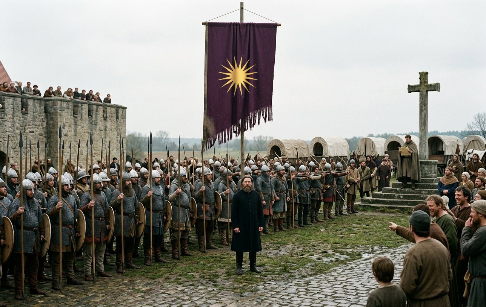
The cloth had been the same since before I came into this history. Sixteen straight rays of gold on a deep purple field, no letter, no crest, no beast, no motto, no border — a device copied out of a Macedonian tomb by a man who had never been taught the rules of heraldry and had therefore made a thing that no herald could describe and nobody could forget. In the markets of eleven countries it had come to mean a company that keeps its contracts. That is the whole of what it said, and in the spring of 906 it stopped meaning that, and began to mean a prince.
I have heard it said since, in Regensburg, by men who were there, that the herald's voice ran out over the market and that the crowd at the wall started to laugh. I have no doubt of it. A Greek with a Japanese grandfather and a company of Vlachs, Georgians, Serbs, Chinese and horse-thieves, declaring war on the King of Bavaria in a cattle market: there is no country on earth where that is not funny, and the German country is not the one where it is funniest, but it is in the top five.
The laughter is not in the record. The laughter is mine. I was at the back with the wagons and I heard the noise and I asked the man next to me what was happening and he said: *they're laughing.* That is the whole of what I have, and I am letting it stand in my own hand, marked, because it is the only eyewitness thing in this chapter and because a later reader is entitled to see exactly where the record stops and I begin.
The retinue
The first thing he did after declaring was not a march. It was a muster.
In the fifth month, at Regensburg, eight regiments were raised. Two of Retinue Vanguard, two of Retinue Lancers, four of Retinue Archers — seven hundred men, and every one of them in the record by corps and not one of them in my ledger, because they were not hired. They were the first troops in thirty-five years that this company raised for its own work.
I want the reader to understand what was strange about that. This army had raised regiments before — nine times, ten — but always against a contract, and always with a purse behind it that somebody else had filled. A company that raises troops on its own account is a company spending its own money on a war that may not pay, and no company I have ever heard of does it unless it means to be more than a company when the war is over.
The Vanguard were the old men and the good ones: the men who go in first and are chosen for it, and who are paid twice, and who in this company were paid twice because they died twice as often. The Lancers were horse. The Archers were the ones I cared about, because they cost what a smith's year costs and nobody had ever told the treasury to feed four hundred archers for the summer of a war that was not yet anybody's but ours.
Matako took the forge off the wagon and put it on stone. Forty horses were shod in nine days, and the mail that had been mended nine times was stripped off and re-riveted, and she had three boys of the company working the bellows in rotations and one boy who did nothing but count nails out loud because he had discovered that he could.
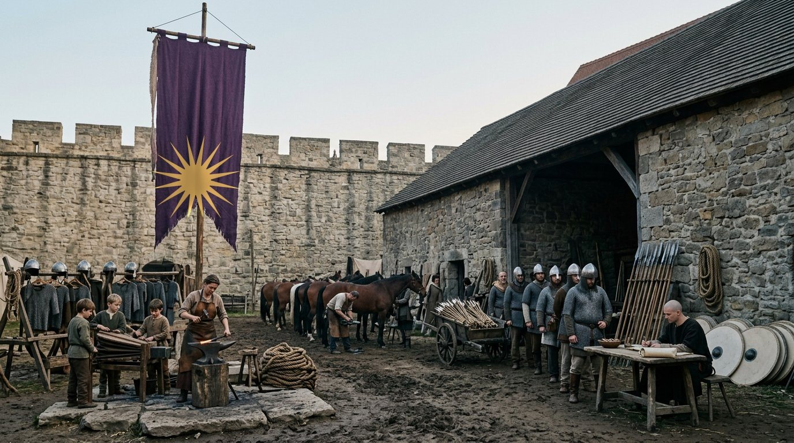
That is what a war looks like on the ninth day of it: not a battle. A forge, a horse-fair, and a clerk at a table in the shade with a list of what we cannot afford.
And while this was happening he was still fighting somebody else's war.
The war of Ernst the Wolf for Coburg had been running since the tenth month of 903 and it had already taken us into Franconia and Bavaria and held us there two and a half years, and it did not end until the eighth month of 906, four months after the declaration. So there is a thing in the record which is worth writing down plainly, because I do not think any of the great captains did it: in the summer of the year in which he declared a war for the crown of Bavaria, this company marched twice in one season, once for Ernst and once for himself.
The battle was at Lichtenfels, in the fifth month, and it was the easiest field of the whole year: two thousand two hundred and sixteen of ours against three hundred and forty-five of Otto the Just, and not one of ours lost. Not one. I have the number and I have looked at it more times than it deserves. Three hundred and forty-five men came up the valley against our line and did not come back off it, and the account of that day is a page in my book with a cross at the bottom, which is the mark I put against a day when nobody has to be written home about.
I fought Otto the Just twice in those two years, once in 905 and once in 906, and both times on his own country's ground, and both times he lost, and there is nothing in the record about what he thought of it. In the ninth month of 905 I had written that we had two of ours lost against six hundred and thirty-four of his, and I had written under the count, in my own words, that a man could come back to that field. I did not know how right I was. I will come to Lengenfeld.
The German country
The march ran from the fifth month to the eleventh, and the record's list of it is: Déols, Chalon, Porrentruy, Ansbach, Nördlingen, Hellenstein.
A reader who knows the map will see that this is not a march but a tour of a thousand miles, beginning in Berry and turning through Burgundy and the Jura and coming back north-east into Franconia and Swabia, which is the wrong direction for a war in Bavaria and exactly the right direction for a company that has been paid to be seen.
I am not going to make a mystery of it. There were contracts in it. There is always a contract in it. A company of two thousand men does not cross Europe by accident, and a captain who has just declared a war cannot march straight at the enemy in the fifth month, because an army of that size eats the country it stands on and there was no country yet that belonged to him to eat.
So the army went west and did what it does. Déols, in Berry, where there is an abbey and a market and a contract; Chalon, on the Saône, where we took the bridge and were paid; Porrentruy in the Jura, which is a bishop's town with an exceedingly good road in and an exceedingly bad one out; and then the turn, north-east, and the German country again, Ansbach and Nördlingen and Hellenstein, and behind each of those names on the list is a fortnight of mud, a burned barn, a price agreed, a wagon axle, and men who were not in the company in the spring.
Six names. Nine hundred to eleven hundred miles, depending on how you count a ford. Eleven hundred horses, forty wagons, fifty-five regiments, and the light horse which was the largest single body in it.
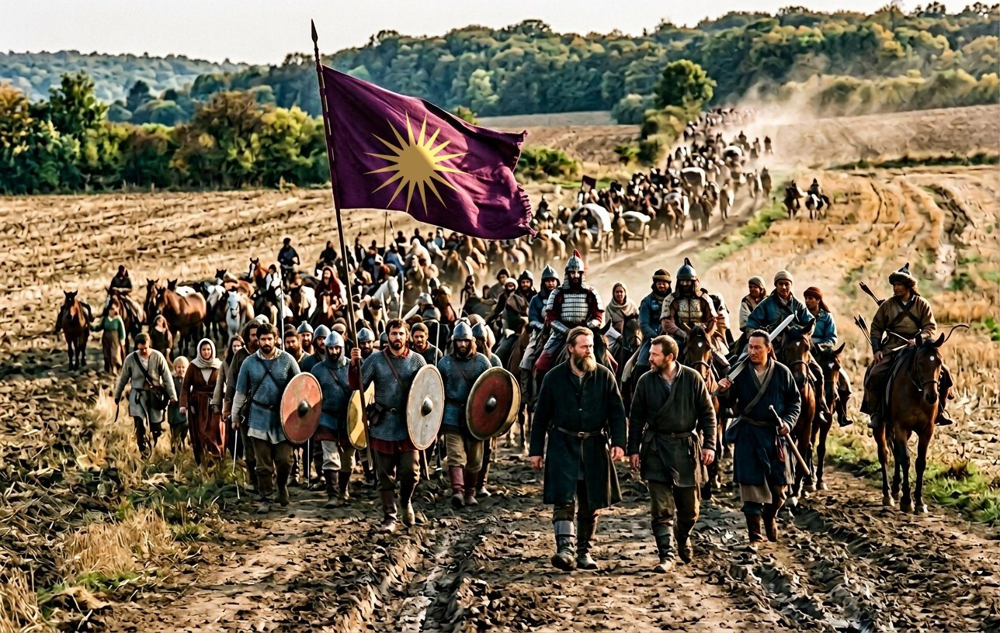
I have marched with this army for twenty-eight years and I still do not know how to write a march. The truth of it is that it is the same day four hundred times, and that the four hundred days are the entire substance of a soldier's life and about one page of any account of him.
Here is my page. A column is nineteen miles long if it is strung out and eleven if it is kept closed, and it is never kept closed. The Vanguard walk. The armored foot walk. The Zhanmadao walk, with their long swords over their shoulders in cloth bags, and they sing, and nobody has ever found out what they are singing, and Ivan the Fox says it is a work song from a river two years east of the end of the world. The Ayrudzi ride and are insufferable about it. The light horse are gone from the column and back again twenty times a day, because that is what light horse is for, and every evening there are three of them with a sheep that was not theirs. The wagons are in the middle where the wagons are always in the middle. The women walk and the children ride, and every camp has a forge in it and a table with a clerk at it, and the clerk is me.
And twice a day, morning and evening, a man of fifty-six rides the length of it.
That is the thing the chronicles leave out and it is the only thing I have ever seen a great captain do that an ordinary one will not. He rode it — the whole column, both ends, twice a day, on a horse that was never fresh — for nine hundred miles of that year. He knew the name of every man in the Vanguard. He knew which of the wagons had a bad axle before the driver did. He stopped at the Zhanmadao and asked after a man's foot. He stopped at the forge and got his hands black and did not wash them, and then went and sat with the pay-clerk and read my figures with dirty hands, and once he said to me: *the men who are going to be killed in the eleventh month are in this column, and I would know their names before I spend them.*
I wrote it down that evening. I do not often write down what he says to me, because most of it is about forage, but I wrote that.
Qiáo
On the thirteenth day of the sixth month of 906, on the road between Porrentruy and Ansbach, Qiáo died of his heart, aged sixty.
He had come out of the north with the company in 879. He was one of the men who had been at the wreck, one of the eleven nations, a Chinese of the old company's second generation — I have never established whether he was Han or not and he would not tell me, being of the opinion that a clerk's questions were a form of taxation — and he had been in this history since the beginning of the second volume, on the rolls, in the ranks, in the record two hundred and nine times, and never once in a sentence that anybody thought worth preserving.
That is what most of a company is. Qiáo was a good soldier for twenty-seven years and nobody wrote him down, and I am writing him down now, in the only place he will ever be written down, because he died on a road in the Jura in the summer of a year in which the Captain became a king, and it is important that a reader understands how much of that army was men like him.
He did not fall. He was walking, in the third hour of the morning, at the rear of the second company where the old men walk, and he put his hand on the tail of a wagon, and sat down, and was dead before the wagon stopped, and the man beside him said afterwards that he had not made a sound.
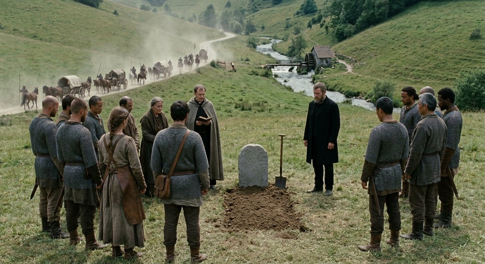
We buried him where we were, which is on a slope above a stream with a mill on it whose name I never got, and the priest said what the priest says, and eleven men stood round the grave and one of them was me and one of them was the Captain, and after it he stood there a while and then said the thing that I have heard him say at every grave since 871, which is: *say the name.*
They said the name. Then the column went on, because it always goes on, and by the evening the wagons had crossed the stream and there was nothing on that slope but a mound with a stone on it that a smith had cut the night before with a chisel and no letters on it, because Qiáo could not read and had told her once, in a camp, that he did not want his name in a language he could not answer in.
Now the count, because this is the place for it and I am the man who keeps it.
When the company came out of the north in 879 there was a roll, and the roll was long enough that the clerks of that year stopped copying it and started counting it, and in the summer of 906, on the day Qiáo was buried on a slope above a mill, there were five names left on it: Matako, who is the smith and will write the last section of this chapter; Pramda; Shiina the Noble; Evanthia; and me.
Five, out of a roll that filled a boat. And one of the five has a forge and one has a book and the other three are what is left of an army that came out of the north with a Japanese robe in its chest.
I set that number down here, before Hall, because after Hall it will be five still, and because I want the reader to have it in mind when I say, later in this chapter, that the army which took the crown of Bavaria was not the army that came out of the north. It was not. It was the second and third generation of it, with five old people in the middle, one of whom is writing.
Hall, the seventeenth day of the eleventh month
The first battle of Hall was fought on the seventeenth day of the eleventh month of 906, and it is the battle of this book, and I have put it off for six weeks of writing.
Four thousand three hundred and forty-five of ours against five thousand two hundred and seventy-two of theirs. Every one of the five thousand two hundred and seventy-two lost. Thirteen of ours.
I will give the reader the two facts that make that arithmetic mean something, and then I will try to write the day.
The first fact is that it is the only time in the whole war that he was outnumbered. He declared in the spring with fifty-five regiments and he went into the autumn of that year against a man who had put a larger army into the field than he had, and he did it on purpose, and the reason he did it on purpose is the second fact.
The second fact is who Pribunja was.
Pribunja was born in 850. That is the same year as the Captain, and in a book that has counted everything else I am surprised nobody has counted that. He was a lord of the Hungarian country with a name that men in three kingdoms said carefully, and in the years 888 and 889 this company fought beside him in the Holy War for Visegrad, and he won Komárom on our side of it, and I have the fee in my ledger in my own hand and his seal on the parchment in the chest.
That is what an ally is, in this trade: a seal, a fee, and two summers.
He was also Ludwig's wife's father. Mirna was Pribunja's daughter and she was Queen of Bavaria, and so when a Greek company with no country declared war on a king with no army, the king's father-in-law hired five thousand men and came himself to save his daughter's crown.
I want to be careful here, because it would be easy to make this into a story about a man destroyed by his own past, and the record does not support that, and I was there. Pribunja did not come to Hall for sentiment. He came because his daughter was a queen and his grandson would be a king, and because five thousand men is a great deal of money and he had it, and because he had beaten better armies than ours in his own country before I was born.
But I will say what I saw at the far end of that field, and it is the only piece of poetry in this chapter: the two old men were the same age, they had taken money from each other and paid it, and one of them was standing on his own ground for the first time in thirty-five years and the other was standing on somebody else's for the last time.
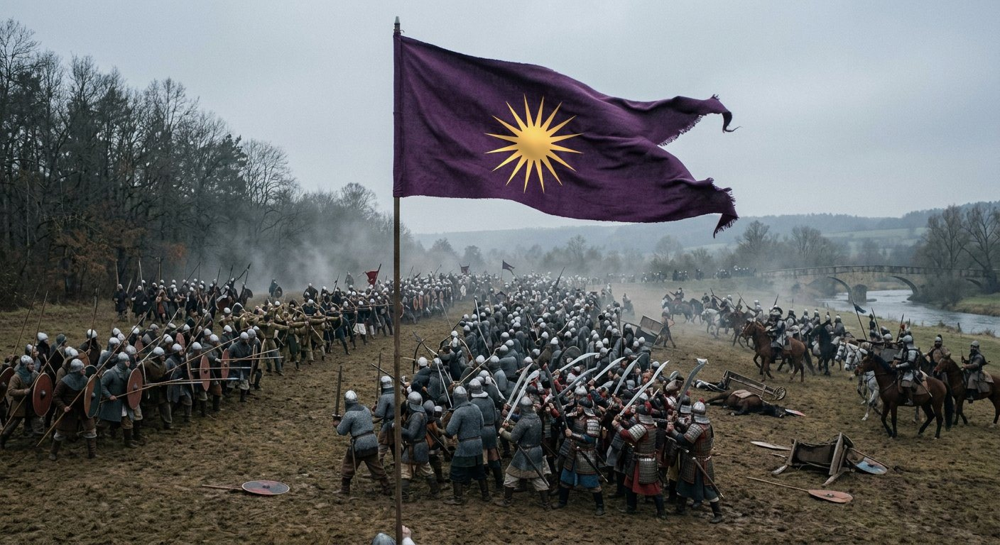
Hall is a town in Hohenlohe on a river called the Kocher, and the ground north of it in the eleventh month is the colour of a boot.
I have the field in my book as I always have the field, because I drew it before the battle with the scouts and the Captain in the tent, and my drawing has four things on it: the road from the south, the river running east and west with one ford and one bridge, a long shallow rise north of the water with a wood on its left, and the town, which is behind and to the right and does not matter.
We came up the road from the south in the morning with the sun behind a lid of cloud, in three bodies, and Pribunja was already over the water with his back to the ford, which is the mistake, and I have never been able to decide whether it was a mistake.
Here is the argument for it not being one. Five thousand two hundred men cannot be fed on a rise in November for a week. He had come north to raise the country and his numbers were his argument, and an army that crosses a river to show that it is not afraid of you has a reason that a clerk cannot put in a ledger. Here is the argument for it being one: his back was to the only ford within nine miles, and we had eleven hundred horses and the largest body of light horse in Europe.
The battle began in the second hour after noon and it was over before the light went.
I am not going to give the reader the five phases of it, because I did not see the five phases, I saw a slope from behind a wagon with two other clerks and a boy holding three horses. What I can give is what happened in the order that I am sure of.
The Vanguard went up the rise first, on foot, in two bodies, and took the wood on the left, because a wood on the left of an enemy line is either the safest place on the field or the place where the battle is decided, and there is no way to know which until it is. The Zhanmadao went in on the right of them, eight hundred men with their great swords out of their cloth bags, and did the thing they do, which is not to break a line but to make a hole in it that does not close. The armored foot came up the middle in two bodies of eleven hundred and held. And the archers — the new ones, four hundred of them, raised in Regensburg five months before for a war that had not existed in the fifth month — stood in the gap between the second and third bodies and shot into the flank for two hours without advancing a step.
Then the Ayrudzi and the light horse went round the right end of it, and got between Pribunja's army and the ford.
That is the whole of the battle and it is not a trick and it is not clever. An army with its back to a river and one ford, against an enemy with more horse than it has, is an army that has already lost and does not know it yet. What the horse did was tell it.
They did not charge the line. I want that written down because twenty years from now the story will be that they did. What the light horse did was appear on the road behind the ford, in three troops, at the walk, in the middle of the afternoon, in full view of five thousand men who were already being pressed on the front, and the men on Pribunja's left turned their heads.
A line that turns its head is not a line any more. It is a crowd that has been told something.
What came after that took about the length of a field and it was not a battle, and I have written this passage before in this book about Verona and I am going to write it again, because nobody outside this trade ever does the arithmetic. One thousand men in five thousand do not all die in a battle. What happens is that a line breaks and the men in it run, and the men who run are killed from behind for the length of a field, and the ones who catch them have the horses.
And then there is the water. That is the part I have not written before, because I have never seen it before and I hope not to see it again.
Five thousand men went into the Kocher in the eleventh month of the year, and the ford was nine horses wide, and the bridge was a stone bridge with a gate-house that somebody had shut. I have never in my life heard a noise like the noise at that ford, and I have been at eleven sieges. The ones at the back were pushing the ones at the front into the water because the ones at the front were not going fast enough, and the ones in the water were being carried down and getting out and coming back up the bank into the same crowd, and our horse was on the bank, and it went on until it was too dark to see, and then the archers shot at the noise.
Every one of the five thousand two hundred and seventy-two. I have written it now in my book and in this history, and I still do not believe the third digit.
Thirteen of ours.
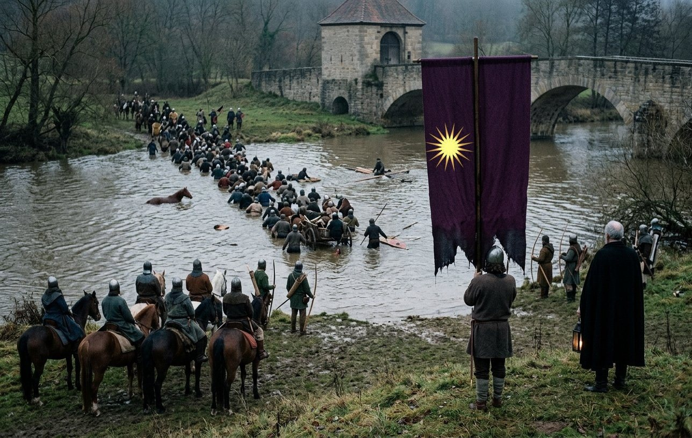
I have never been able to find out what became of Pribunja. He is not in the record after Hall. The record counts his army to the last man and does not name him again, and this book is not going to do what other books do and give him a death, because I do not know it, and because the man who could have told me — the Captain — was asked once, in Regensburg, by me, in the second year of the crown, and he said: *I looked for him on the bank and I could not find him, and then I stopped looking.*
That is not an answer and it is the only one there is.
In the town that night the bells rang for a fire, and the town was not burned, because he would not have it burned. I want to put that next to the ford, since they happened on the same evening and a reader is entitled to hold both. He gave the order that no man was to go into Hall, and the whole army slept in the field in the frost, and the thirteen were laid out in a row under a wagon sheet with their names on a board, and he walked the bank with a lantern until it was light.
I have looked at that sentence for a while and it is the truest thing I have written in this chapter. Five thousand men drowned in a river nine horses wide, and the man who did it walked the bank with a lantern until it was light, and in the morning he was the King of Bavaria in everything but the word.
The king with one man
Six days later, on the twenty-third day of the eleventh month, the company fought the second battle of Hall.
Four thousand three hundred and sixty-six of ours. One of theirs.
That is the record's number and I am not going to round it up, and I have had two men of this company tell me to my face that it must be a copying error, and a clerk in Regensburg who said it was a figure of speech for a rearguard, and an old soldier in the east quarter who said, with great confidence, that it meant one *banner*. It means one man. The record counts armies and it counted one.
I will tell the reader how that day came about, because I was in the tent when the scouts came back and I have never forgotten the face of the man who was reporting.
After Hall the country was open. There was nothing between us and the Bavarian court but a road, and we took the road, and the war in the ordinary course of things should have ended in the eleventh month of 906 and did not, because a war ends when the enemy's lords come in and swear and not when his army is in a river. Ludwig's lords did not come in. They sat in their castles and waited to see which way a thing that no one had ever seen before would fall — a company of hirelings with a claimant's name on its war, standing in the middle of Bavaria with nothing to besiege.
And Ludwig, who was thirty-five, and *Brave*, and *Honest*, and had lost his father-in-law and his army and his Queen's father in one afternoon on the Kocher, came out.
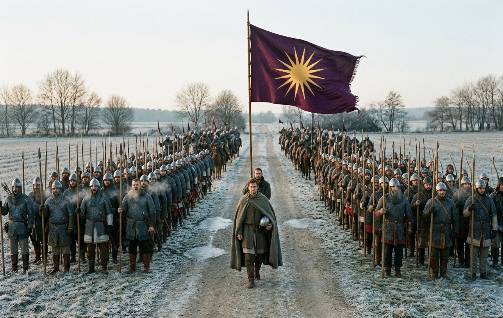
I have thought about the second battle of Hall more than about the first, and I am going to set down what I think, marked as mine, because the record will not help and because this is the strangest page in thirty-five years of this book.
He came out with one man. Not a bodyguard, not a household, not a herald: one man, in the record, on the twenty-third day of the eleventh month of 906, against four thousand three hundred and sixty-six. The company was mustered for a battle. It stood in ranks for a battle. And down the road came the King of Bavaria and one man, and the whole of that army — eleven nations, five hundred archers, eleven hundred horses, thirteen men in the ground six days — stood there and did not know what to do.
There is a thing armies do at such a moment and I have seen it three times in my life: the men begin to shout. Not an order, not a cheer, a noise, because a formed body of men cannot hold a joke and a threat at the same time and has to let something out. Four thousand men shouted at a king and one man on a road, and the sound went out over the frost, and the two of them kept coming.
I do not know what he said to them, or whether he said anything. I was four hundred paces back with the ledgers. What I know is that the line opened, and the Captain went out in front of it on foot with two men and his sword still in its scabbard, and that whatever was said out there on the road between the two of them was said by two men who had both been born in the same year as each other's fathers and one of whom had a kingdom and the other of whom had a company.
And then the record says what it says: he commanded and won the battle of Hall against Ludwig.
He won a battle against one man. The book is not going to pretend that is a victory in the ordinary sense, and it is not going to pretend it is nothing. A king who comes out alone against an army has made a statement to his own lords that no amount of siegecraft can make, and the statement is: *I am not hiding.* It is the one thing a *Lazy* man can do that a clever one cannot, and it cost him, and I will come to what it cost him in the fifth month of the next year at Lengenfeld.
One of the thirteen was buried that day, in the frost, in the same field as the first battle, and I have never found out which of the two graves was his.
Mâcon
Here is the sentence that I have been dreading since I began this chapter, and there is no way to write it that does not sound like a joke.
In the second month of 907, in the middle of his own invasion of Bavaria, with the King of Bavaria loose in the country and his lords unsworn and the war unfinished, Edouinos Silviades went to Burgundy and fought a tournament.
Mâcon. On the Saône, in the county of Mâcon, in the second and third months of 907. Three bouts: Count Péire-Arnaut on the sixth day of the second month; Adam, his own man, in the semi-final on the eighteenth; Vlastimir, his own man, in the final, won on the third day of the third month.
Two of the company's own in the last four. I will come to that, because it is the part of Mâcon that matters and it is the part nobody writes about.
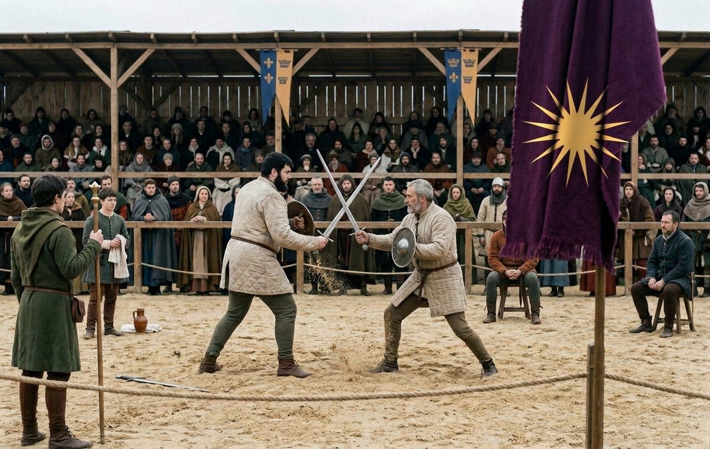
I have heard three explanations for the journey and I am going to give all three and say what I think of each.
The first is that the invasion was stalled and could not be helped by his presence. This is true. An army in Bavaria in the first month of 907 is an army in winter quarters, and winter quarters are held by the quartermasters and not by the captain, and Evanthia had run this company's quarters for twenty years and did not need him in the room. Four hundred miles away or four, the war was going to wait until the thaw. I believe this and I do not think it is the reason.
The second is money. A tournament is a market and a purse is a purse, and a man who has just declared a war for a kingdom has spent more in nine months than in the previous nine years, and the chest that held fifteen thousand gold by 908 held a great deal less in the spring of 907. This is also true. He won, which means he took the purse, and I have the figure and it is not enough to explain the ride.
The third I have only from Matako, who has been with him longer than I have and thinks about him the way a smith thinks about a tool: that after thirty-five years of being a man who fights, he did not know how to be a man who waits, and the tournament was the only place in Europe that would let him do the one thing he knew how to do in front of a crowd that was not trying to kill him.
I think all three are true and I think the third is the largest.
The bouts themselves I did not see; they were in Burgundy and I was in Bavaria with the ledgers and the winter sick-list. What the company knows about the sixth day of the second month is that he beat a count of that country in the lists, in front of the stands, and what it knows about the eighteenth is that he beat a boy of twenty-four called Adam who was nine inches taller than him and had been in the company since he was nineteen, and had married Richara at Regensburg in the first month, and had come to Burgundy on his honeymoon and got to the semi-final of a tournament he was knocked out of by his own captain.
Two of the company in the last four, and the other half of the draw was Vlastimir, who came to us at Vratsa in 900 and who was thirty-one and had never lost a duel in his life, and who lost one on the third day of the third month of 907 to a man of fifty-seven who had been in the field for forty years.
I want to say what that is, because I do not think the reader will get it from the numbers. A company of this kind is not a family; I have said that in this book and I will not take it back. But there is a thing that happens when an army stays together long enough, which is that the best of it begins to be made out of its own sons. Adam was nineteen in 902 and he was a giant with a horse and a bad temper, and in 907 he was in a semi-final in Burgundy against the man who had hired him, and the crowd was shouting for both of them and did not care that the two men had the same standard on their tents.
And on the seventh day of the second month, between the Count and the semi-final, in a house in Mâcon, Uta gave birth to a son.
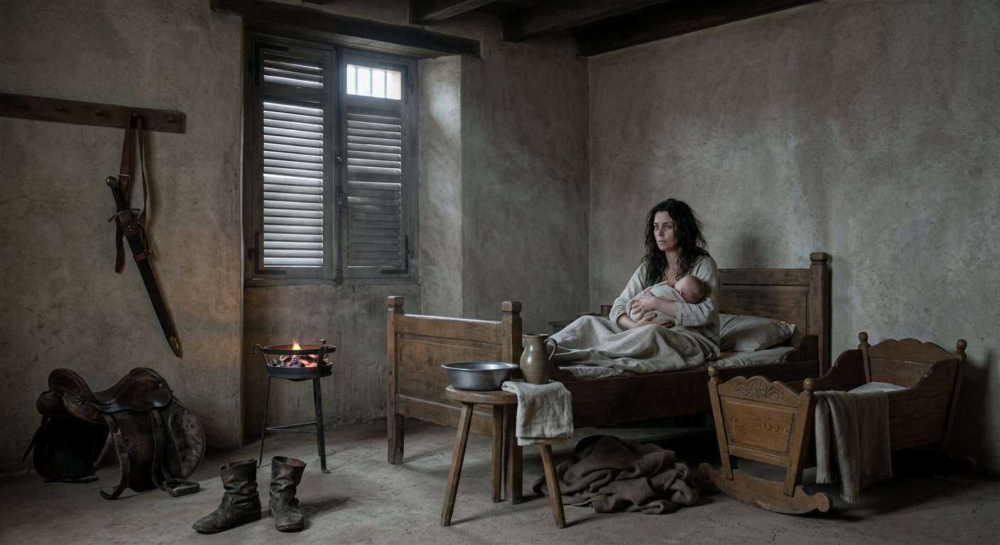
Lysistratos. The record marks him, in the plain way the record marks everything, as the child of a concubine, which is a word the clerks use and the book has to use, and I am not going to write around it. Uta had been in the company since Salzburg in 903. Raina was the wife. The reader may make of that what he likes; the record makes nothing of it, and the book will not invent a scene in a Burgundian house that nobody wrote down.
What I will write down is what happened in the camp in Bavaria when the news came, because I was there for that, and it is small and it is the truth. The news arrived with a rider on the ninth day of the second month and there was a certain amount of drinking, and Raina — who was in Regensburg with Antiphates, who was four — was not in the camp at all, and the drinking happened among the officers, and Menandros' son was fifty-seven years old with a fourth son, and his wife's son was the heir and everybody in that camp knew it and nobody said it.
Matako said it. Of course she did. She said, to me, in the forge, without lifting her head from the work: *there will be a great deal of trouble in this family in twenty years, and it will all be because of a night in Mâcon, and nobody will remember that the man was in a tournament.*
The field at Lengenfeld again
The war ended in the fifth month of the following year, on a field we had used before.
On the nineteenth day of the fifth month of 907 the company fought the King of Bavaria at Lengenfeld, and beat him, and took him prisoner.
I have no numbers for that battle. The record has the memory and not the arithmetic — it says that the Captain commanded and won the battle of Lengenfeld against Ludwig, and that is all it says, and I am not going to invent five thousand men to put beside a king. I have put a note on it at the end of this chapter and I want the reader to see me do it, because this history has numbers in it that I am proud of and I will not spoil them by making up the ones I do not have.
What I can give is the ground, which I do have, and which is the whole of the story.
Lengenfeld is a bad slope with a stream at the bottom and a wood on the left, in the country north of Regensburg, and we had fought on it on a day in the ninth month of 905 against six hundred and thirty-four men of Otto the Just, and lost two of ours, and I had written in my book under the count that a man could come back to that field.
Twenty months. That is all it was. Twenty months between the first battle of Lengenfeld and the second, and in between there was a march of a thousand miles, a declaration in a horse-market, five thousand men in a river, a king with one man, and a tournament in Burgundy.
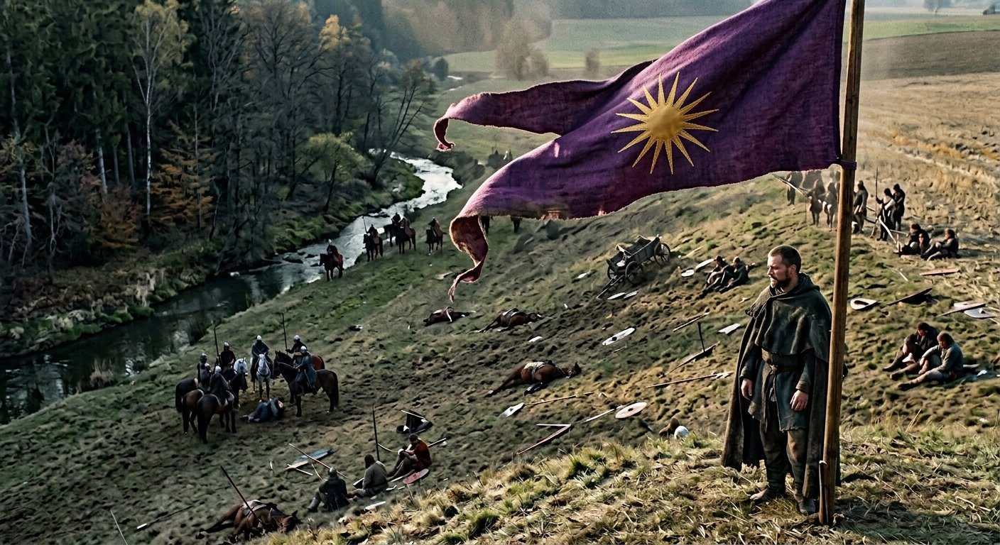
I was on the ridge this time and not behind a wagon, because the wagons were left at the stream and there was nothing to do with a ledger in the middle of it, and so I saw the thing I had come to see without knowing it, which was the King of Bavaria on the same slope, in the same month of the year, coming down into the stream.
I have never been able to hate him. That is an odd thing for a clerk of a company to write about the man his captain destroyed, and I am going to leave it in. He was thirty-six. He was brave, honest, lazy and excommunicated, and he had come out alone in the eleventh month of 906 against four thousand men, and in the fifth month of 907 he came out with the lords who had finally sworn to him, on a slope where a company had already beaten a better army than his, and he lost, and he was taken, and the war was over six days later.
The taking of him I did see, from the ridge, at a distance of about three hundred paces, and it was not a capture in the way the songs have it. There was a knot of horse at the bottom of the slope by the stream, and it stopped, and then it opened, and then there were men standing round a man on the ground, and a while later they got him up and walked him up the hill with his hands loose and no rope on him, which was the Captain's order, given before the battle, in the tent, in front of eleven officers: *if it is the king, he walks.*
He walked up the hill. He was brought to the top of the ridge where the standard was, and the standard is a pole with purple cloth on it and had been in this company since before I came into it, and he stood under it for a quarter of an hour with his own cloak taken off him and given back to him, and then he was given a horse, and a tent, and a guard of six men who were told that they were to be polite to him.
That is how a kingdom changed hands in the fifth month of 907: a slope, a stream, a wood on the left, and a king walking up a hill to stand under a foreigner's flag and be given his cloak back.
The twenty-fifth day of the fifth month
The war was won on the twenty-fifth day of the fifth month of 907, six days after Lengenfeld, and on the same day two men became his rivals.
I did not know a rival was a thing the record kept. It is: a man the record marks, in the flat way it marks everything, as having taken against him. One was called Guerech, of Léon, in the far west, and the record's words for him are *Sadistic* and *Gallowsbait*, which is to say a man who would have been hanged in any country with a working law and had the luck to be born in one without. The other was called Pilgrim, of the house of the Aribonen, and the record's words for him are *Zealous* and *Religious Scholar*.
One of those two is a wolf and every country in Europe has wolves and they are dealt with. The other is a scholar of the church in the country he had just taken, and he is the one who matters, and I am going to say why in one sentence and then leave it, because it belongs to the next chapter of this history and not to this one.
The crown of Bavaria was six days old and the church in Bavaria had already found the man who was going to explain to the Bavarians that a Greek with a sun on his flag had no business being their king.
I have said in this book that the company's conversion was an act of paperwork. I said it in the year it happened and I was right and I did not know how right. This is where the paperwork comes due, and it comes due at the top of a hill in a country of fifteen hundred churches, with a scholar's pen.
The first day of the sixth month
*[Here the Greek lays down the pen, as he said at the beginning of the second volume that he would, and the last section of this chapter is mine.]*
I am Matako, of the company since the tenth month of 879, smith, and I have written pages in this book before and the Greek has cleared this one for me and gone away to be ill about it quietly, which is what he does.
I have never seen a thing change in a morning and I saw one.
On the first day of the sixth month of 907, in Regensburg, the record says: *Captain Edouinos is now known as King Edouinos*. That is all it says. It took one line. There is no ceremony in it; the coronation is a year and a half away and has three good omens in it and a Geisenhausian delicacy, and it is not this. This is a clerk in a room with a book deciding that a word has changed, and it is the largest thing that has happened in this history and it happened in an afternoon, with no witnesses, and I heard about it from the pay-clerk.
I want to say what the word was before and what it was after, because I have been in this company for twenty-eight years and I have used the word every day of them.
Captain. It means a man who has been given men. Not born to them: given. Every man in that army could have been a captain if somebody had given him a company, and the word had in it the whole of what we were, which is a body of hirelings with a man at the top of it who had been chosen by the rest and paid by somebody else.
King. I do not have to explain it to anybody who has stood in a market in the German country.
The other thing that happened on the first day of the sixth month is the thing I am the only person who can write properly, because I had the ledger, and because I have shod every horse in that army at least once.
The army was cut.
Fifty-five regiments in 898. Forty as a king. And the record gives the shape of it and I am going to give it as it came off my own tally, because the shape of it is not a number, it is a list of men I knew.
The Light Horsemen went. All of them. Eleven regiments, one thousand and thirty-two men, most of them on the smallest horses and drawn from parts of the world that had been riding since before there were roads. It was the largest single body in the army and it was the reason the ford at Hall had been a ford and not a battle, and a king does not keep eleven regiments of light horse, because light horse is what a company has when it intends to be somewhere else in a hurry.
The armored foot went from two bodies of eleven to two of eight. The Ayrudzi from eleven to eight. The Zhanmadao from eleven to eight. Eight hundred and forty-one more men went out of the regiments that stayed, which is the part that no chronicle would think to put in: not the eleven regiments that vanished, but the two or three hundred men out of each of the others, one by one, at a table, with a clerk and a purse.
I was at the table. Not for the money. I was there because a man who is leaving wants his horse shod before he goes and does not want to be told that the forge has been taken down.
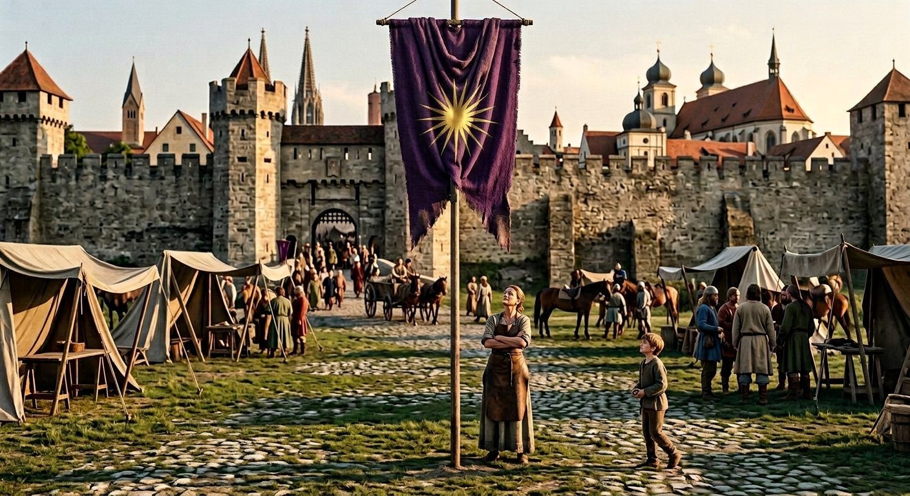
Twelve people left the company on the first day of the sixth month of 907, at Regensburg, and I am going to write all twelve of them down, because a list of names is the only honest way to write a day like that.
Rivai, and Teodora, and their daughter Yehudis. Athanasios. Germano. László the Wolf. Gavril, called the Giant. Prijezda. Vlad. Ioan. And two children: Chairestratos, who was a year and five months old, and Lysistratos, who was four months old and had been born in Mâcon in the second month and had never seen the country he was now a lord of.
Raina's son and Uta's son. Both of them. Out of the company, on the same day as the pay-clerk and the old smith's apprentice and the two men who had been with us since the beginning of the second volume.
I carried Lysistratos to the gate myself, because Uta was not well and because I had made the hinges on the cart.
Nobody told me why the children were going. I have been asked since — by men who were not there, in later years, in wine — and I have said each time that I do not know, and that is the truth, and a smith does not guess about a family to make a story better. What I know is that Raina stood at the gate and did not speak for the whole of it, and that the Captain was not at the gate at all, and that Chairestratos the child was carried by his nurse and was not crying and was looking at the horses.
The rest of the twelve did not go far. That is the thing that makes sense of it and I have to say it or the day reads as a betrayal, which it was not.
At the coronation in Regensburg, fifteen months later, the record calls them Duke Rivai and Prince László and Pontifex Prijezda, and has Athanasios standing up in front of the hall and leading the pledges of loyalty, and their houses by then are carrying Bavarian place names on them — a man of Lienz, a man of Ravensburg, a man of Berchtesgaden, a man of Braunau.
So the likeliest reading — and I am marking it as a reading, because the record does not list a single title — is that a man who had been given a kingdom gave his old company land. The men who followed a captain with no country became lords in his kingdom, with houses and rents and a place in a hall, and they left the roll to do it, because you cannot be a lord and a sergeant of the company in the same month.
I find that I am not able to be bitter about that and I have tried. Twenty-eight years I have been in this company, and the men who took the land were the men who were owed it, and the only thing that makes me angry is that they took the two babies with them and nobody has ever said why.
I asked him. Not on the day. In the winter, in the second year of the crown, when he came down to the forge himself with a horse that had cast a shoe and stayed an hour, which he did perhaps four times a year and which I have always understood to be the way he asks after the men he has lost.
I said: why did the children go.
And he said: they were given a house.
And I said: they are children.
And he said: so was I, when I was given one.
I did not understand it then. I have thought about it for two years and I think I understand it now, and this is my page and I am going to write what I think, marked, in the way the Greek does.
When this man was a boy there was a house in a county called Chupka, and a father who went to Naniwa and did not come back, and a name that had to be carried eight thousand miles to be worth anything, and a fortune made in iron, and thirty-five years of being hired. He was never given a house. He made one out of a company, and then he made the company into a kingdom, and on the first day of the sixth month of 907 he did the thing that men who were never given a house always do, which is to give one to every child they can reach, regardless of whether the child can walk.
That is my reading and it is not in the record and the record does not owe me an argument.
What is in the record is this, and it is the last thing in this chapter.
Fifty-five regiments became forty. One thousand eight hundred and seventy-three men went out of the army in a season, one thousand and thirty-two of them horse. The chest went on filling — fifteen thousand two hundred and twenty-four gold by the following year, which is more money than this company ever held in its life, and it was held by a king who had just sent two fifths of his soldiers home. Twelve people left the roll. One of them was a pay-clerk who had been in the company since 882 and had a better hand than the Greek. And on the same day, in the same city, in a room with a book in it, a man who had been the Captain for thirty-five years became the King, and the company which had been called The Dao of Ares since before I could read — a name that a Greek with a Japanese robe had put on a company of eleven nations in 887 and which had never been in a single contract — became the Kingdom of Bavaria.
I banked my fire at dusk, as I do, and I went and stood in the horse-market where the war had been declared fourteen months before, and there was a pole there with purple cloth on it, and a boy of the town throwing stones at the pole.
I chased him off. Then I stood there a while and looked at the thing, which is a device off a Macedonian tomb that means nothing in any language, and which eleven nations had now died under, and which was, from that afternoon, the arms of a kingdom.
I do not know what a smith is in a kingdom. I have been the smith of a company for twenty-eight years and I know exactly what that is, down to the price of nails. The Greek will write the next chapter, because he is a Roman and a Roman knows what a court is, and because I have said my page and I am going to keep the forge and the tally, and the book, which is now mine again, and which I will write in the way I write, which is plain.